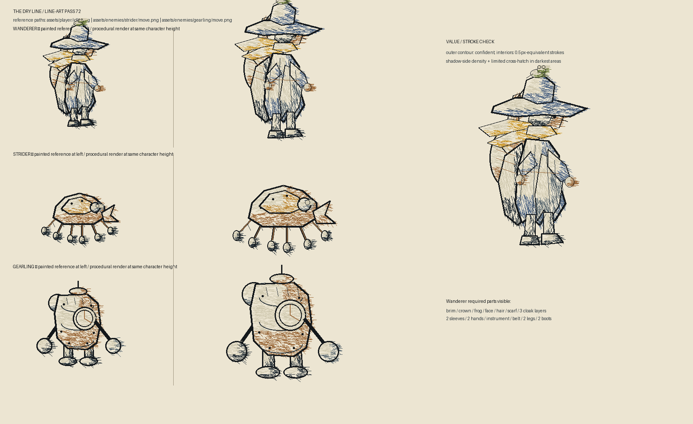

Procedural Line-Art — current proof
The renderer that produced this proof is render_pass.py. Regenerate with python render_pass.py 72 pass_72_vs_painted.html.

Gate status: OPEN. See CRITIQUE.md. Earlier browser renderer files are retained for research but are not the pass-73 browser renderer.